The brief
PureCS is part of PureHealth, and Pura is its consumer-facing super-health app — the kind of product that tries to be one place for a user's health, not a single-purpose tool. I joined as CX/UI Designer in August 2023 to lead a full UI revamp aimed at a specific, hard-to-fake goal: increasing user retention and satisfaction by making the app actually pleasant to use, not just usable — with handoff-ready documentation for the development team.
Applying the Double Diamond
I ran the redesign through the Double Diamond framework — discover, define, develop, deliver — rather than jumping straight to screens. In the discover and define phases, I ran focus groups and competitive analysis to understand where the existing app was falling short of what a "super-health" app should feel like. In develop and deliver, I moved through affinity mapping, rapid prototyping, and A/B testing, validating directions against real user behavior before committing to a final design rather than relying on internal opinion.
Old vs. new
The existing app read as a set of disconnected screens with little visual hierarchy — the redesign introduced a cohesive, dashboard-first experience built around clear data visualization and a consistent visual language.
Old

New
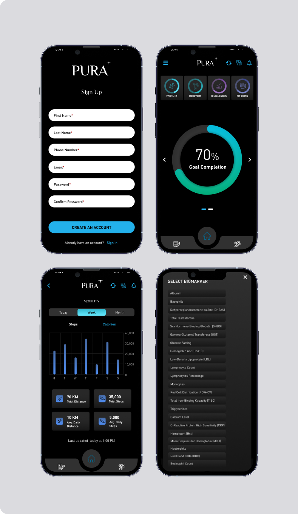
Design system
To keep the redesign consistent as it scaled across the app, I built a component library and design language — buttons, cards, charts, and states — used throughout every screen, and handed off to engineering as living documentation.
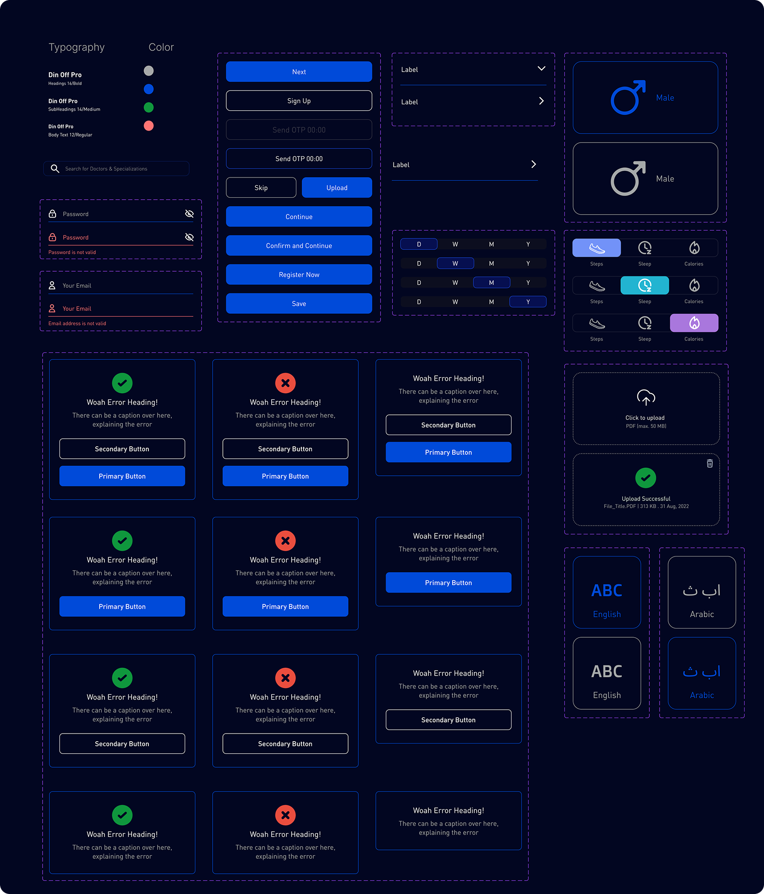
Key flows redesigned
The revamp touched every major flow in the app, not just the dashboard — click a flow to see the old and new screens side by side.
Old
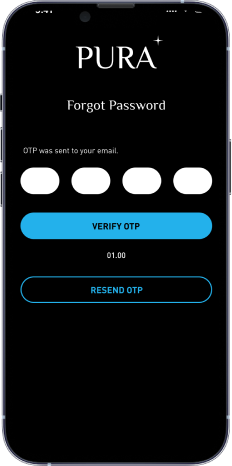
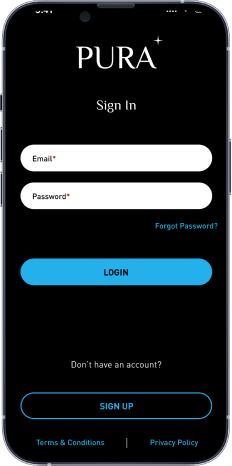
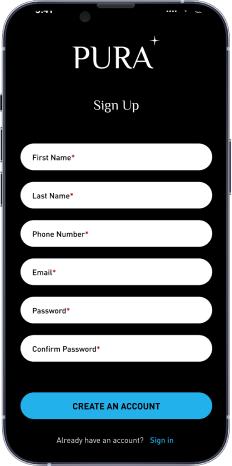
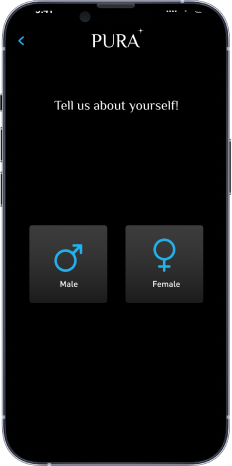
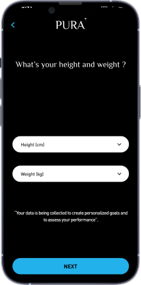
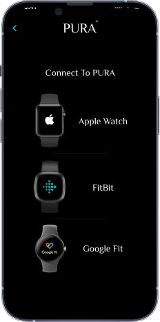
New
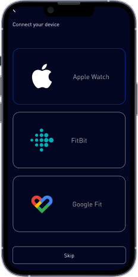
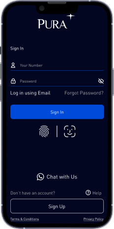
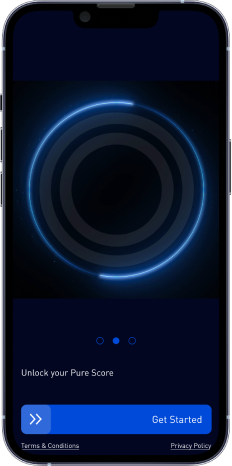
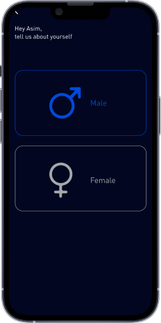
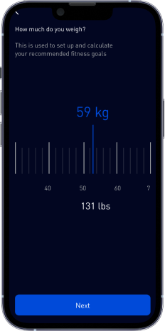
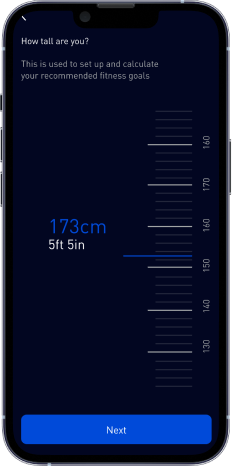
Old
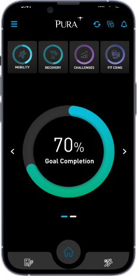
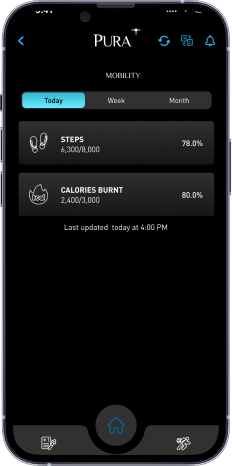
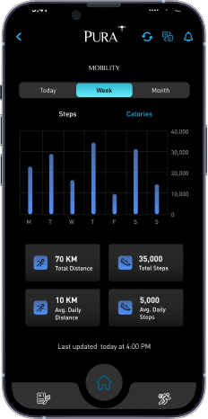
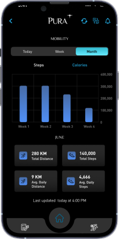
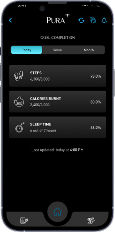
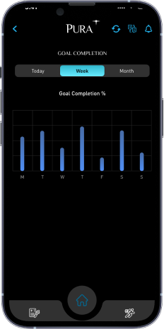
New
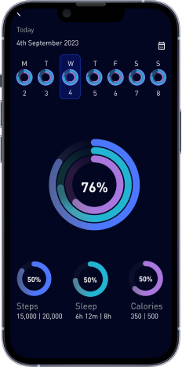
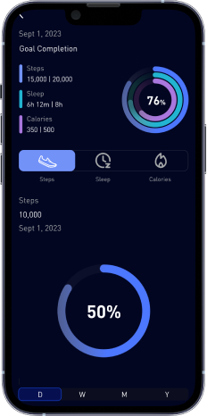
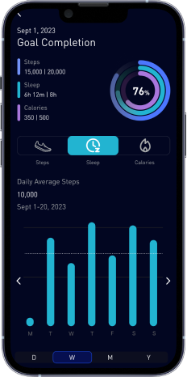
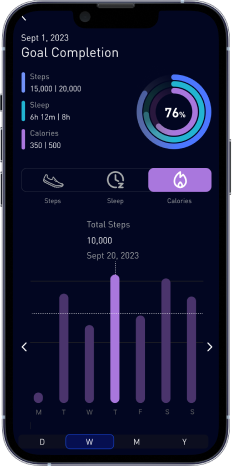
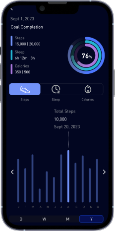
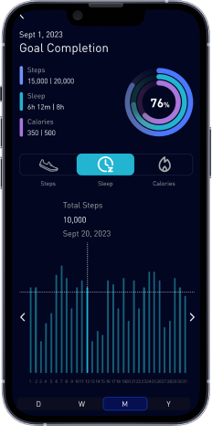
Old
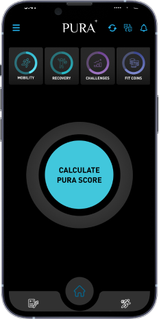
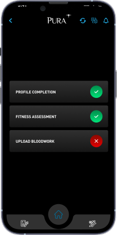
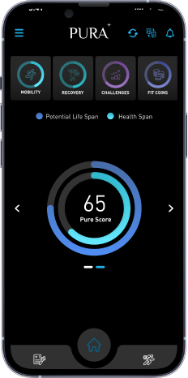
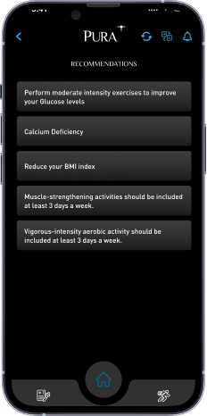
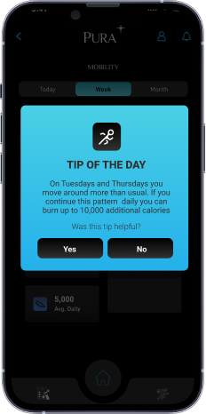
New
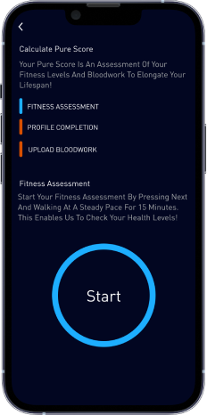
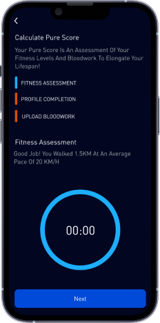
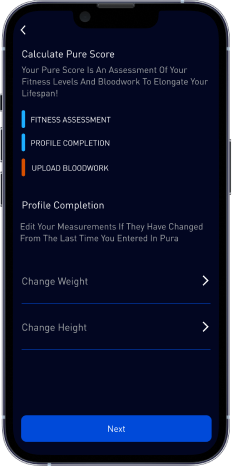
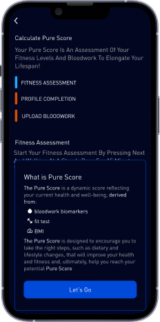
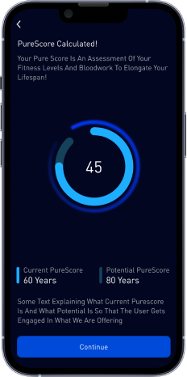
The result
My redesign improved user satisfaction with Pura by 60% — a broad, structural improvement that reflected the app finally working the way a health app should: coherent, trustworthy, and easy to act on, not just easy to open.
A cybersecurity dashboard for Abu Dhabi
Alongside the Pura work, I designed a cybersecurity dashboard for a mega facility in Abu Dhabi — a very different design problem, built for security operators monitoring a large, high-stakes physical facility rather than consumers managing their health. I designed the dashboard to improve incident-response efficiency, giving operators a clearer, faster path from detecting an issue to acting on it. That work contributed to a 50% increase in revenue tied to the engagement.
The throughline
Pura and the cybersecurity dashboard don't look alike on the surface — a consumer wellness app and an enterprise security tool for critical infrastructure — but both came from the same instinct: figure out what the person in front of the screen actually needs to do in that moment, and strip the interface down to make that as fast and clear as possible. At PureCS, that instinct scaled from a health app used by thousands to a dashboard used by the handful of people responsible for keeping a facility safe.